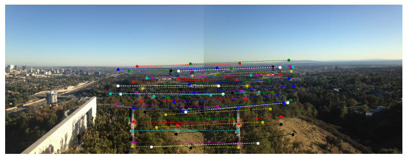
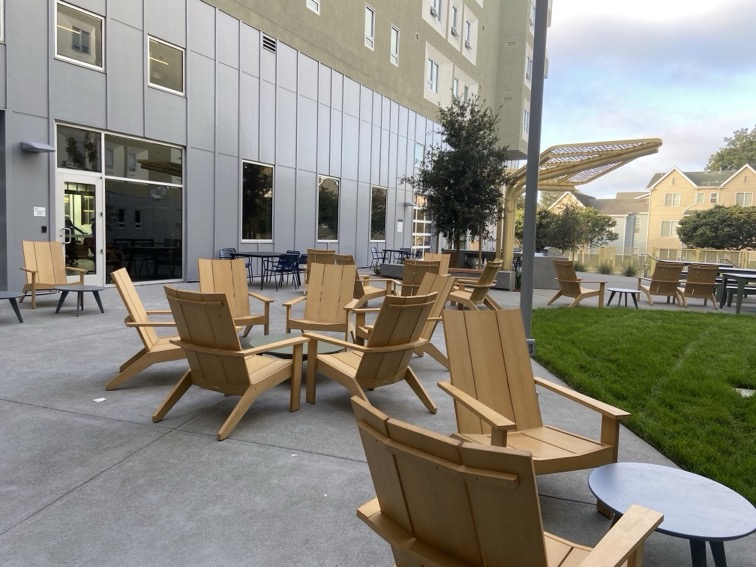
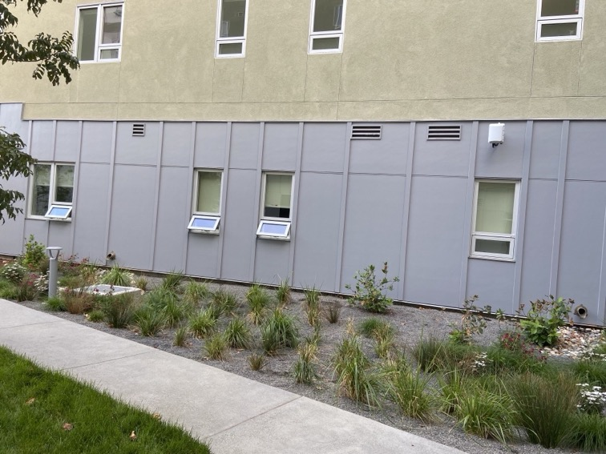

Image Stitching & Mosaics
Method & Explanations
Points of Correspondences: Correpondences between two images are defined by at least 8 pairs of points in the two images that correspond to the same feature. Given a pair of images, correspondence points are labeled manually with a simple program created with ginput from Matplotlib library. The output is two sets of points stored in a file, with each line of the file consisting of points (x1, y1) and (x2, y2) representing the coordinates of a corresponding pair of points in image 1 and image 2.
Recovering Homography: The method of computing homography transformation matrix H between two images is the same as the previous section. Additionally, the property of matrix multiplication is used such that given images A, B, C, the homography transformation from A to C denoted as H_AC is equal to H_AB * H_BC. For my setup, given a series of images related by projective transformations, the center image IM_C is picked and all homography transformations are computed as transformations to IM_C.
Warping: The overall procedure for my warping setup is shown below.
Given a series of N images IMS = [IM_1, IM_2, ..., IM_N] related by projective transformation, with center image IM_C.
→ Step 0: Compute all homography transformations H_i from IM_i to IM_C.
→ Step 1: Determine final size of the entire mosaic image using transformed corner points of images in IMS.
→ Step 2: Create N blank images B_1, B_2, ..., B_N, one for each image in IMS.
→ Step 3: Place center image IM_C (no transform needed) onto its canvas B_C.
→ Step 4: For all IM_i != IM_C, perform inverse homography transform warping with interpolation and place result on its own canvas B_i.
→ Step 5: Blend B_1, B_2, ..., B_N one by one to obtain final mosaic.
For step 4, by computing transformed corner points of IM_i, we obtained its transformed area in IM_C's frame. We can then use sk.draw.polygon to obtain coordinates of all points in this area and then apply inverse homography transform on them to figure out what pixel in IM_i should correspond to each point in the area of IM_C's frame. Bilinear interpolation is applied since the resulting pixel coordinate in IM_i may not be valid.
Blending/Stitching: To blend the images after they are all transformed to center image's frame, a simple alpha channel feathering method is between each adjacent image pairs. Distance transform (using scipy.ndimage.distance_transform_edt) is used to compute masks that gradually shift from 1 to 0 at the edges of the transformed images. For two adjacent images A, B and mask M, the images are blended based on formular A * M + B * (1 - M).
Results
View of LA from Getty Center
Image 1
Image 2
Image 3
Correspondence Points Pair 1
Correspondence Points Pair 2
Mosaic
Xučyun Ruwway Courtyard
Image 1
Image 2
Image 3
Image 4
Image 4 (Repeated)
Image 5

Image 6
Image 7
Note: I took the above photos with my iPhone 11 by hand. I tried to make sure that the center of projection remains the same throughout and only rotate horizontally but I may have shifted it somewhat for the first 2 images due to having an unnatural hand position, the potential impact of this will be analyzed later. In addition, some camera settings may not be constant throughout all images as the iPhone camera may have some automatic adjustments applied. There is a notable brightness change between images 1-4 and images 5-7.
Mosaic (Images 3 to 5, N=3)
Mosaic (Images 2 to 6, N=5)
The above result for 5 images is not good likely due to the larger span of horizontal rotation that is now close to 180 degrees. Therefore, the full 7 images mosaic is not tested in this section, and a potential solution with cylindrical mapping is examined in the following section.